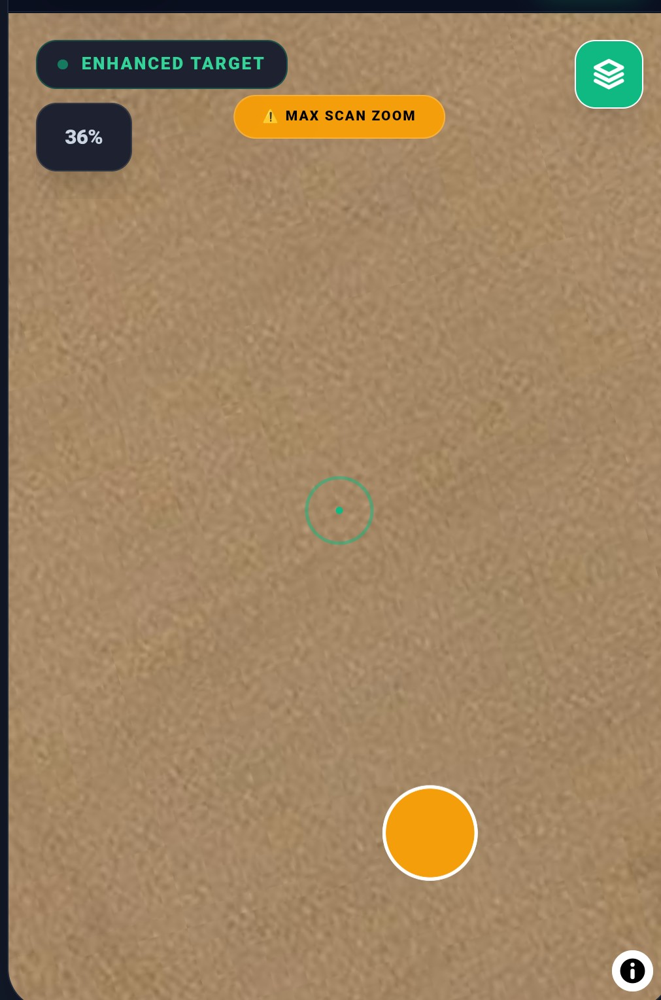
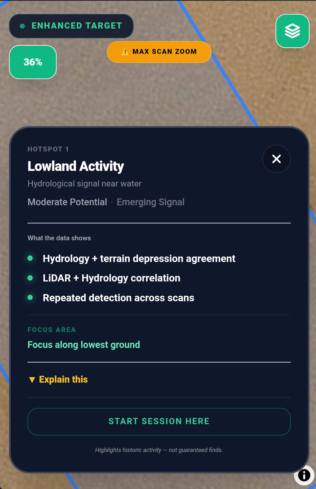

FindSpot for UK detectorists.
Read the landscape before you step into the field.
Scan land with FieldGuide, record finds, manage permissions, plan rallies and handle significant discoveries responsibly.


FieldGuide highlights areas of past activity and potential. It helps you focus your search; it does not guarantee finds.
Most detectorists search fields.
FindSpot reads the landscape.
Trusted by 3,000+ detectorists across the UK
Built using archaeological landscape principles
FieldGuide™ helps you choose where to detect before you even arrive.
It reads the land — terrain, water, routes, and history — and highlights where past activity is most likely.
Less wandering. More evidence before you start.
-
Reads terrain morphology and hidden ground features Hidden terrain features most people never see — surface shape and micro-topography analysed for signs of past activity.
-
Reveals lost boundaries and historic routes Switch between 1800s Ordnance Survey maps in the field — lost structures, boundaries and roads, still readable in the data.
-
Highlights movement corridors and convergence zones Roman roads, droveways and trackways can concentrate activity. FieldGuide highlights these convergence zones automatically.
-
Trace Signals — a second pass for subtle archaeology A dedicated engine reads buried ditches, terrace edges, crop patterns and other faint landscape traces that terrain analysis alone can miss.
-
Protected landscape awareness built into every scan Scheduled monument boundaries overlaid so protected areas are visible before you're standing on them.
Field intelligence for detectorists.
FieldGuide highlights areas of past activity and potential — helping you focus your search, not guaranteeing finds.
FieldGuide uses proprietary methods to support landscape interpretation. Intellectual property of FindSpot.
Your finds start to tell a story.
Every find you record builds a picture across your land.
Your finds on the map.
Your history on every hotspot card.
The picture starts to build.
-
Your finds become part of the landscape picture Your recorded finds show up as a layer in FieldGuide — see where patterns are building across your land.
-
Hotspot cards show your history When you tap a hotspot, FindSpot shows how many of your finds were recorded nearby — so you can see which signals are already paying off.
-
Build a picture over time As your find log grows, the map builds a record of where you've been productive — turning experience into evidence.
The more you record, the clearer the picture gets.
Four field jobs. One app.
FindSpot is built around the tasks detectorists actually do before, during and after a dig.
Read the evidence first
FieldGuide compares terrain, water, historic routes and landscape context to surface stronger starting points.
Log quickly, finish properly
One-tap GPS capture in the field, then photos, period, material, depth, detector data and notes when you have time.
Protect the land you can detect
Store boundaries, proof, landowner details, agreements, coverage and field visit reports.
Clubs, rallies and club days
Find nearby events, mark yourself as going, or run a QR-based club/rally dig with a combined day review.
Mud, rain, gloves on. Still works.
FindSpot is built for real detecting — not just desk research.
-
Never miss a find One-tap Quick Find logs GPS instantly. Add the full details when you're back home.
-
See the gaps you're missing Coverage tracking shows exactly where you've walked — and what ground you haven't covered yet.
-
Works without signal Recording, permissions and field tracking all work offline.


This is how you keep your permissions.
Protect your permissions. Earn more land.
Professional landowner management — from first contact to field visit reports.
-
Proof of permission, instantly Show a clear digital permission screen if you're challenged in the field.
-
Sign agreements in the field Create and sign professional agreements right there on your phone.
-
Field visit reports landowners keep End-of-session reports showing time on site, area covered and finds recorded.
This is how you earn the next season.
Report layouts and generated interpretation are proprietary to FindSpot.
Your finds deserve better than a notebook
Turn every find into a proper record — location, depth, period, detector data and photos all in one place.

-
Archaeological-quality records Location, depth, material and period recorded accurately against grid position.
-
Detector metrics Target ID, signal and detection context stored with every find.
-
Shareable find cards Generate clean, professional find cards in one tap — for PAS reporting or sharing with your club.
-
Significant-find workflows Guided three-path response for discoveries that need more than a standard record — Stop & Secure, Map Scatter, or Notable Find.
Replace your notebook, maps, and guesswork — with one free app.
Found something significant? FindSpot guides the next step.
Some moments in the field need more than a normal find record. FindSpot gives you three guided routes when context matters.
Stop & Secure
For when something may still be in the ground
Stop digging, protect the spot, record the position and preserve the context. The right response before any further disturbance.
Map Scatter
For finds spread across an area
Log each point before the pattern is lost and build a clearer picture of the scatter. Spatial context that a single record can never capture.
Notable Find
For one exceptional object already recovered
Record photos, location, context and follow-up details properly. Everything in one place before details are forgotten.
Three paths. One aim.
Help detectorists respond responsibly when a find may matter. Like having an archaeologist in your pocket when the moment counts.
Supports responsible recording. Does not constitute legal or reporting advice.
Open FindSpot freeRun a club or rally dig — without the admin.
One QR code. No installs. No accounts. And a full day review when it's done.
Organisers
Create a dig and share a single QR code. Members are in instantly — no download, no account. Import everyone's finds at the end of the day.
Members
Scan, record finds, and you're done. Export your session to the organiser in one tap when the day ends.
Organiser Hub
After the dig: review the full day's finds, see who found what, and generate a combined report — all in one place.
Everyone detects. One combined report. Full day review.
Open FindSpot freeThe Club Day and Rally Dig system — including QR join, organiser workflow, combined find import and Organiser Hub — is proprietary to FindSpot.
Find a rally. Plan your session.
FindSpot's Discover tab shows local clubs and upcoming rallies across the UK — filtered to your area. Mark yourself as going, plan your session, and go.
Nearby Clubs
Find detecting clubs within your chosen radius and see when they meet.
Upcoming Rallies
Browse rallies and club digs with dates, locations, and booking links. Tap "I'm Going" and it lands straight in your permissions.
Plan Your Session
Nearby events ranked by distance and date. Plan ahead — so the day you go, you're already ready.
Get Listed Free
Running a club or rally? Submit your details and reach detectorists near you.
Your data stays yours. Always.
Your saved finds, GPS coordinates, photos, permissions and landowner details stay on this device unless you choose to export, share or submit them.
Online features may request map tiles, landscape data, club/rally listings or form details you enter.
-
100% Local-First Everything stored in your device's own internal database.
-
No automatic uploads Your private records are not synced to a FindSpot account or uploaded in the background.
-
No location analytics No advertising trackers or analytics on your saved find spots, tracks or permissions.
-
Full Data Control Export everything as CSV or JSON whenever you want.
You're not detecting more.
You're detecting smarter.
Most people rely on luck.
You don't have to.
No subscriptions.
No accounts.
No locked features.
Everything. Free. Always.
Common questions
Everything you need to know before you install.
Does it work on iPhone and Android?
Yes — FindSpot is a Progressive Web App (PWA), which means it works on any modern phone browser, iPhone or Android, without going through the App Store or Google Play. On iPhone, open the site in Safari and tap Share → Add to Home Screen. On Android, your browser will usually prompt you to install automatically.
Do I need to create an account?
No. There's no account, no login, no email required. Everything is stored locally on your device. You can start using FindSpot immediately after installing it.
Does it use mobile data in the field?
Find recording, permission management and coverage tracking all work offline with no signal. FieldGuide scanning needs a connection to fetch landscape data for a new area, but once loaded the results are cached. Map tiles are also cached after your first visit to an area.
Is it really free? What's the catch?
Completely free. No subscription, no locked features, no chargeable tier. FindSpot is built by detectorists and is free to use in full. There is no catch.
What is FieldGuide and how does it work?
FieldGuide is FindSpot's landscape intelligence engine. It analyses terrain shape, water features, historic movement corridors, and archaeological context to highlight areas of likely past activity on your permission. It then suppresses weak or modern signals so you're left with converging evidence, not noise. It won't guarantee finds, but it gives you a much better starting point than guesswork.
Will it work on my permission even if it's small?
Yes. FieldGuide works on any size field. Smaller permissions will naturally have fewer signals to converge, but the analysis still runs across terrain, hydrology, historic routes and disturbance data — and highlights what it finds.
What if I find something important?
FindSpot includes guided workflows for significant discoveries — Stop & Secure, Map Scatter and Notable Find. These help you protect context, record accurately and take the next responsible step in the moment, before details are lost. They support responsible recording and do not substitute for professional advice.